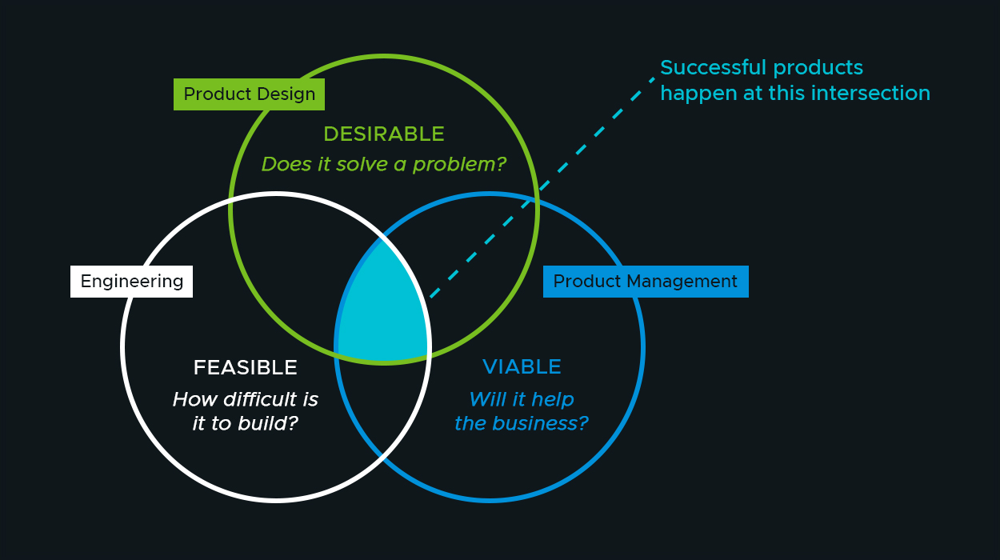

Team priorities
Not all work is equally important in the stream of stuff that needs to get done when building and shipping software. So how do you make sense of what to work on?
If work items are prioritized outside your development team, you need to have a discussion about ownership. A team that does not have control over what to work on is not in a position of ownership and (assuming the team is working in good faith) cannot be held responsible for any misaligned outcomes.
So the team is in control over what work that needs doing. How do you then ensure that whatever goes to the top of the list is the most important thing to work on?
Every change you make to your software should have a desirable impact on some metric. Could be usability, speed, cost, flexibility or some other measure. If the proposed change doesn't really move any needles in any way, it should probably make way for something that does!
In practice there will be more factors at play such as changes requested by the organization itself versus changes requested by end-users or maybe other stakeholders and the team can also innovate and experiment by themselves. A balance must be found to keep make sure the most impactful changes get developed. If you ignore your end-users, satisfaction will drop and people will stop using your product to find something that does work. Ignoring the business will probably result in your team losing funding, disbanded or shut down in some other way for not aligning with the goals of the organization.
It should be up to the team to figure out how to maintain that balance. Getting feedback early and often helps a lot in ensuring you are still "building the right thing, at the right time".
Keep important stakeholders in the loop of your plans and priorities and all that's left is figuring out how to actually build the things that make a difference.
Putting the development teams in charge is probably a huge shift for many organizations but stepping away from "feature-factories" (where teams are fed a stream of changes to implement without context or feedback loops) will greatly improve the sense of ownership and responsibility for the members of the teams.

Some great resources on getting to this new way of structuring teams and way of working can be found in the Team Topologies book and the Balanced Teams approach.